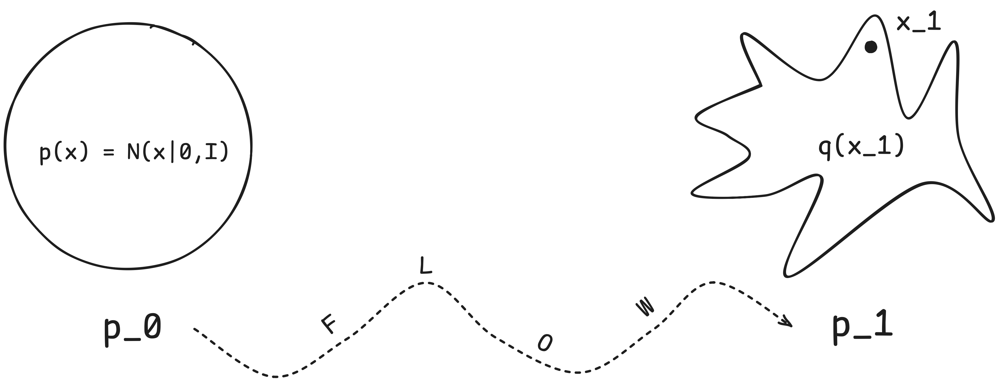
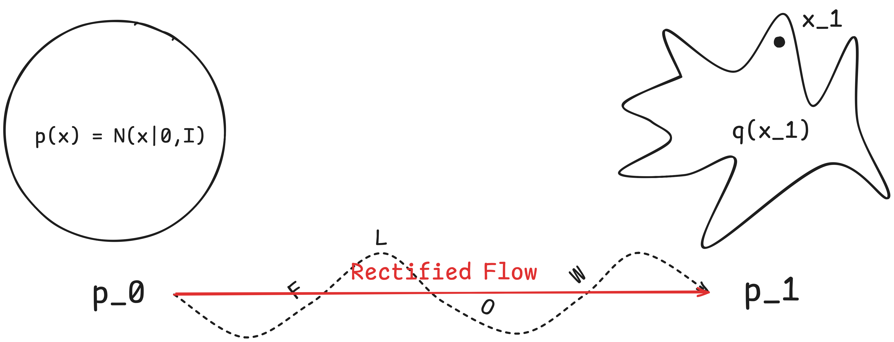
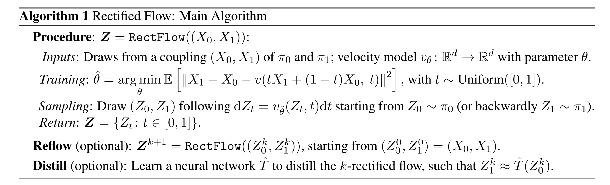
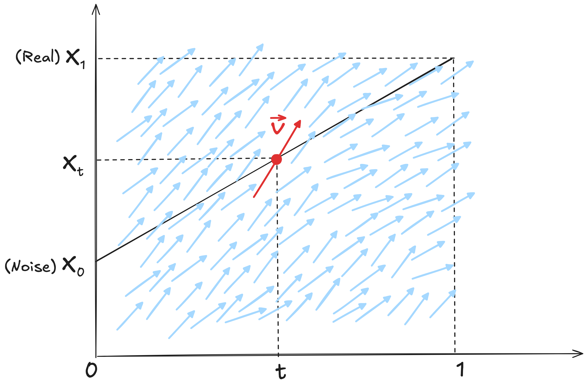
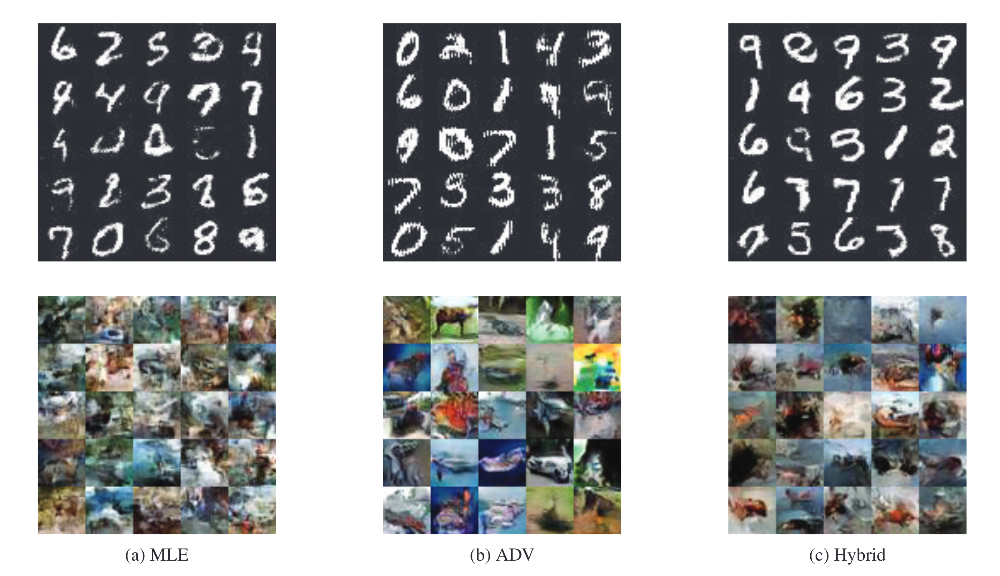
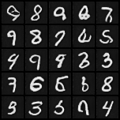
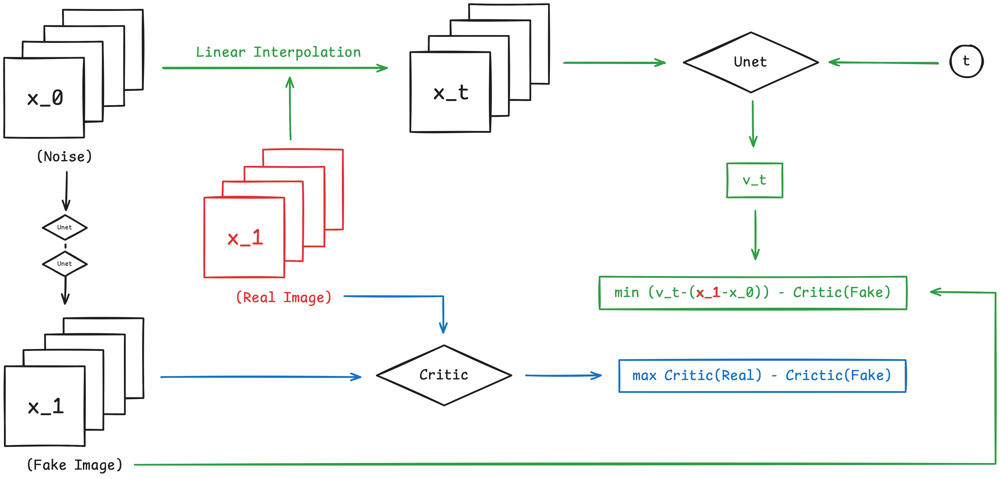

name: inverse layout: true class: center, middle, inverse --- # Rectified Flow Author: .yellow[Cuiem] [[Index](../../index.html)] [[16:9](20241023_16_9.html)] .footnote[Supported by [Remark](https://github.com/gnab/remark)] --- layout: false # Agenda ### 1. Theory ### 2. Flow-Gan ### 3. Latest Work --- template: inverse # Theory --- .left-column[ ## Theory ### - Flow Matching ] .right-column[ Let \\(x_1\\) denote a random variable distributed according to some unknown data distribution \\(q(x_1)\\). We assume we only have access to data samples from \\(q(x_1)\\) but have no access to the density function itself. Furthermore, we let \\(p_t\\) be a probability path such that \\(p_0 = p\\) is a simple distribution, e.g., the standard normal distribution \\(p(x) = N (x|0, I)\\), and let \\(p_1\\) be approximately equal in distribution to \\(q\\). The Flow Matching objective is then designed to match this target probability path, which will allow us to flow from \\(p_0\\) to \\(p_1\\). <center> <p></p> </center> ] .footnote[.red[*]Lipman, Y., Chen, R. T., Ben-Hamu, H., Nickel, M., & Le, M. (2022). Flow matching for generative modeling.] --- .left-column[ ## Theory ### - Flow Matching ### - Rectified Flow ] .right-column[ The rectified flow is an ODE model that transport distribution \\(\pi_0\\) to \\(\pi_1\\) by following .red[straight line paths] as much as possible. Given empirical observations of \\(X_0 \sim \pi_0\\), \\(X_1 \sim \pi_1\\), the rectified flow induced from \\((X_0, X_1)\\) is an ODE on time \\(t \in [0, 1]\\), $$ \begin{aligned} dZ_t = v(Z_t, t) dt \end{aligned} $$ which converts \\(Z_0\\) from \\(\pi_0\\) to a \\(Z_1\\) following \\(\pi_1\\). The drift force \\(v: \\mathbb{R}^d \longrightarrow \\mathbb{R}^d\\) is learned by solving the following optimization problem: $$ \begin{aligned} \min_{v} \int_0^1 \mathbb{E}[||(X_1 - X_0) - v(X_t, t)||^2] dt,\quad \text{with}\quad X_t = tX_1+(1-t)X_0 \end{aligned} $$ <center> <p></p> </center> ] .footnote[.red[*]Liu, X., Gong, C., & Liu, Q. (2022). Flow straight and fast: Learning to generate and transfer data with rectified flow. arXiv preprint arXiv:2209.03003.] --- .left-column[ ## Theory ### - Flow Matching ### - Rectified Flow ### - Algorithm ] .right-column[ <center> <p></p> </center> <center> <p></p> </center> ] --- template: inverse # Flow-Gan --- ## Flow-Gan Check My log [here](../../GenerativeModel/GmPaperReading/FlowGan/fg.html). <center> <p></p> </center> .footnote[.red[*]Grover, A., Dhar, M., & Ermon, S. (2018, April). Flow-gan: Combining maximum likelihood and adversarial learning in generative models. In Proceedings of the AAAI conference on artificial intelligence (Vol. 32, No. 1).] --- template: inverse # Latest Work --- .left-column[ ## Latest Work So far results: <center> <p></p> </center> ] .right-column[ Want to combine Rectified Flow and Gan. <center> <p></p> </center> ] .footnote[.red[*] Check larger image [here](20241023_16_9.html#10).] --- template: inverse #Thank You! [[Index](../../index.html)]